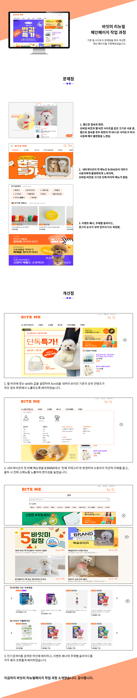

신입 웹 퍼블리셔
임하은에게로 떠나는 여행!
Itinerary
- brain
- heart
- hand
- footstep
점선
‘하은아, 인생은 속도가 아니라 방향이야.’
늘 스스로를 다른 사람과 비교하며 조바심 내던 제게,
어느 날 친구가 해준 말은 깊은 울림이 되어 가치관을 바꿔주었습니다.
성공가도로 나아가야 한다는 생각에서 벗어나 하고 싶은 일을 하기로 마음 먹은 뒤
첫 결정은 바로 웹 개발 공부를 시작한 일입니다.
프론트엔드 개발은 제가 그동안 공부했던 외국어와 달리,
내가 만드는대로 보여지고 노력한만큼 쌓여가는 기쁨을 오롯이 느끼게 해주었습니다.
비전공자로서 이 분야에 첫 발을 내딛으며 많은 시행착오를 거쳤지만,
그 과정에서 일궈낸 저의 시간을 이 포트폴리오를 통해 보여드리고자 합니다.
기존 웹페이지에서 많은 정보를 메인에 배치하여
가독성과 중요도가 떨어지는 점을 보완하고자 했습니다.
사용자 편의성을 높이는 디자인으로 리뉴얼하는데 중점을 두어 구현하였습니다.
직접 개선한 요소는 아래 작업과정을 클릭해서 확인할 수 있습니다. (웹 버전에서만 가능)
100% 개인 작업

기존 웹페이지가 모바일 전용 사이즈로 일괄 디자인 되어 있어
웹 전용에 적절한 width 1000px 사이즈로 리뉴얼하였습니다.
가로가 짧고, 세로로 긴 직사각형 모양의 기존 웹을 개선해
중요 이벤트와 광고 등을 가로로 배치하였습니다.
직접 개선한 요소는 아래 작업과정을 클릭해서 확인할 수 있습니다. (웹 버전에서만 가능)
100% 개인 작업
